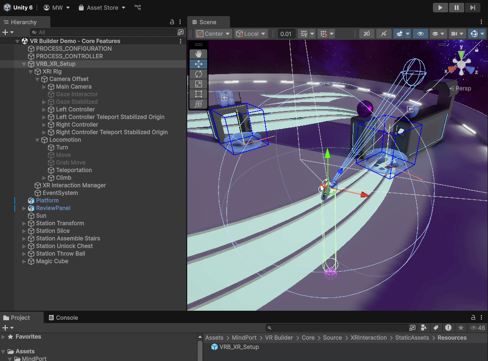
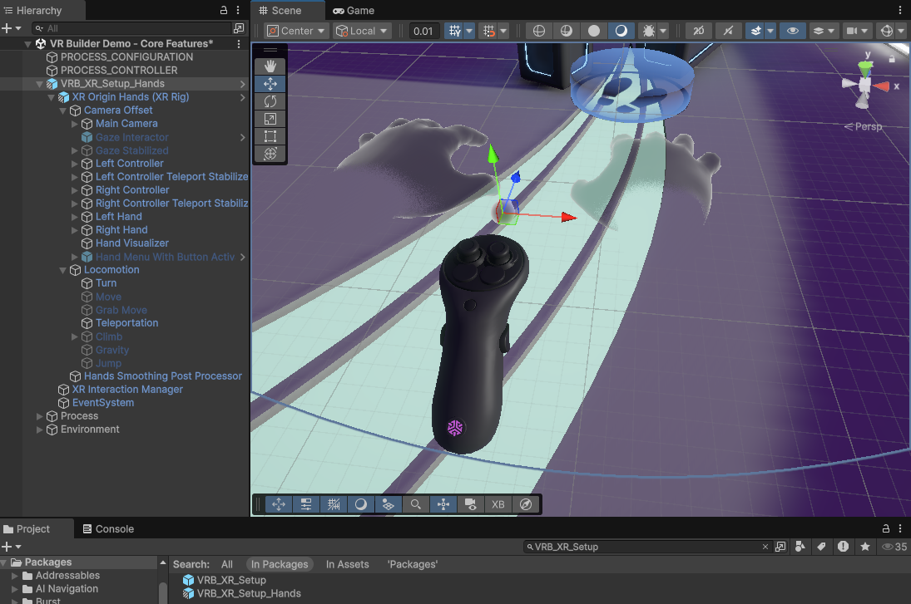
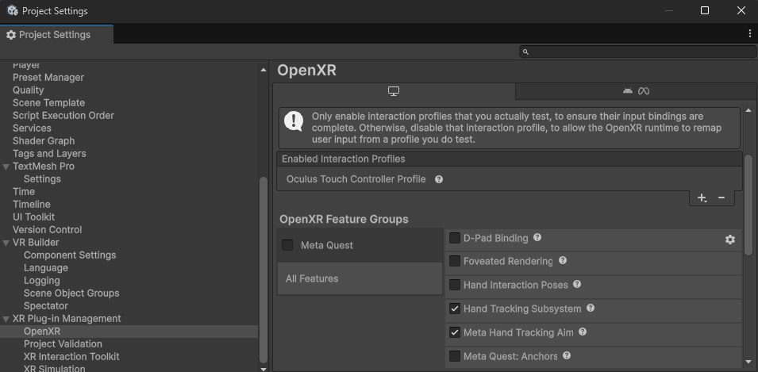

XR Rig
The XR Rig is a game object that anchors the user’s head mounted display, controllers, or user’s hands when using hand tracking within the virtual space. Essentially, it represents the user in the scene. On the rig, you can configure which types of locomotion and interaction are available to the user.
VR Builder XR Rig
When creating a new scene with the VR Builder Scene Setup Wizard, you get a VRB_XR_Setup game object automatically added to the scene. VRB_XR_Setup is the VR Builder XR Rig and is built upon the suggested standards set by the Unity XR Interaction Toolkit. Therefore, VRB_XR_Setup is very similar to the XR Origin (XR Rig) found in the XR Interaction Toolkit samples but has some additional VR Builder–specific scripts added.
The VRB_XR_Setup game object is a fully unpacked copy of the prefab with the same name. If you are familiar with Unity’s prefab workflows you can use the prefab or better your own prefab variant of it.

VR Builder XR Rig with Hand Tracking
VR Builder also includes an XR Rig that supports hand tracking. To use it, search for VRB_XR_Setup_Hands in the VR Builder Package and replace the VRB_XR_Setup game object with the VRB_XR_Setup_Hands prefab. Depending on your preferences, you can keep the VRB_XR_Setup_Hands prefab (see image below) or completely unpack it.
Just like the VRB_XR_Setup, the VRB_XR_Setup_Hands is built on top of the XR Interaction Toolkit samples and aligns with these standards. For example, it supports automatic switching between hands and controllers. During runtime, the following logic is used for determining which modality is active: If a hand begins tracking, this component will switch to the hand group of interactors. If the player wakes the motion controllers by grabbing them, this component will switch to the motion controller group of interactors once they become tracked. While waiting to activate the controller GameObject while not tracked, both groups will be deactivated. For the exact implementation behavior or if you want to modify it, refer to the XRInputModalityManager inside the rig.

Hand Locomotion
If users need to move with hand tracking enabled, there is the built-in Grab Move locomotion type. Other ways of locomotion (e.g., teleportation via a hand gesture) are possible but require custom implementation effort.
Troubleshooting
If your hands do not show up, ensure that the OpenXR Feature Groups Hand Tracking Subsystems and Meta Hand Tracking Aim are enabled in the OpenXR page in the Project Settings.
